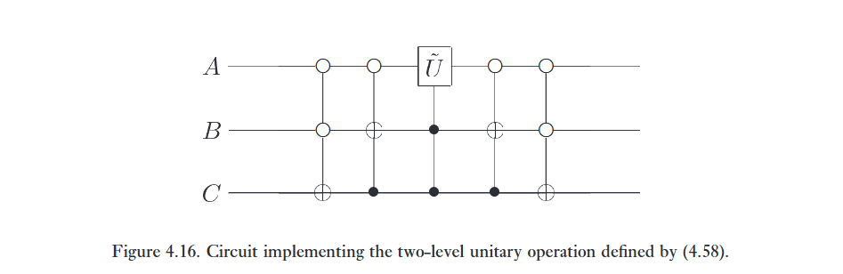

Universal quantum gates
Một tập hợp nhỏ các cổng (ví dụ: \text{AND}, \text{OR}, \text{NOT}) có thể được sử dụng để tính toán một hàm cổ điển tùy ý, như chúng ta đã thấy ở Mục 3.1.2. Chúng ta nói rằng một tập hợp cổng như vậy là vạn năng (universal) đối với tính toán cổ điển. Trên thực tế, vì cổng Toffoli là vạn năng đối với tính toán cổ điển, nên các mạch lượng tử bao hàm (subsume) các mạch cổ điển. Một kết quả vạn năng tương tự cũng đúng đối với tính toán lượng tử, trong đó một tập hợp các cổng được cho là vạn năng đối với tính toán lượng tử nếu bất kỳ phép toán unita nào cũng có thể được xấp xỉ với độ chính xác tùy ý bởi một mạch lượng tử chỉ bao gồm các cổng đó.
Bây giờ chúng tôi mô tả ba cấu trúc vạn năng đối với tính toán lượng tử. Các cấu trúc này xây dựng dựa trên nhau, và đạt đến đỉnh điểm ở một chứng minh rằng bất kỳ phép toán unita nào cũng có thể được xấp xỉ với độ chính xác tùy ý bằng cách sử dụng các cổng Hadamard, phase, \text{CNOT}, và \pi/8. Bạn có thể tự hỏi tại sao cổng phase lại xuất hiện trong danh sách này, vì nó có thể được xây dựng từ hai cổng \pi/8; nó được đưa vào vì vai trò tự nhiên của nó trong các cấu trúc chống chịu lỗi (fault-tolerant constructions) được mô tả trong Chương 10.
- Cấu trúc thứ nhất chứng minh rằng một toán tử unita tùy ý có thể được biểu diễn một cách chính xác (exactly) dưới dạng tích của các toán tử unita mà mỗi toán tử chỉ tác động không tầm thường (non-trivially) lên một không gian con (subspace) được nối bởi hai trạng thái cơ sở tính toán.
- Cấu trúc thứ hai kết hợp cấu trúc thứ nhất với các kết quả của phần trước để chứng minh rằng một toán tử unita tùy ý có thể được biểu diễn một cách chính xác bằng cách sử dụng cổng một qubit và cổng \text{CNOT}.
- Cấu trúc thứ ba kết hợp cấu trúc thứ hai với một chứng minh rằng phép toán một qubit có thể được xấp xỉ với độ chính xác tùy ý bằng cách sử dụng các cổng Hadamard, phase, và \pi/8. Đến lượt nó, điều này ngụ ý rằng bất kỳ phép toán unita nào cũng có thể được xấp xỉ với độ chính xác tùy ý bằng cách sử dụng các cổng Hadamard, phase, \text{CNOT}, và \pi/8.
Các cấu trúc của chúng tôi nói rất ít về tính hiệu quả (efficiency) — bao nhiêu cổng (nhiều theo đa thức hay hàm mũ) phải được kết hợp để tạo ra một phép biến đổi unita cho trước. Trong Mục 4.5.4, chúng tôi chứng minh rằng tồn tại các phép biến đổi unita đòi hỏi một số lượng cổng nhiều theo hàm mũ để xấp xỉ. Tất nhiên, mục tiêu của tính toán lượng tử là tìm ra các họ phép biến đổi unita thú vị có thể được thực hiện một cách hiệu quả.
Xây dựng một mạch lượng tử để cộng hai số hai bit x và y theo modulo 4. Tức là, mạch phải thực hiện phép biến đổi \vert{}x, y\rangle \rightarrow \vert{}x, x + y \pmod 4\rangle.
1. Two-level unitary gates are universal
Xem xét một ma trận unita U tác động lên một không gian Hilbert d chiều. Trong phần này, chúng tôi giải thích cách U có thể được phân rã thành một tích của các ma trận unita hai mức (two-level unitary matrices); tức là, các ma trận unita chỉ tác động không tầm thường (non-trivially) lên hai hoặc ít hơn các thành phần vector. Ý tưởng cốt lõi đằng sau sự phân rã này có thể được hiểu bằng cách xem xét trường hợp khi U là ma trận 3 \times 3, vì vậy giả sử rằng U có dạng
U = \begin{bmatrix} a & d & g \\ b & e & h \\ c & f & j \end{bmatrix}. \tag{4.41}
Chúng ta sẽ tìm các ma trận unita hai mức U_1, \dots, U_3 sao cho
U_3 U_2 U_1 U = I. \tag{4.42}
Từ đó suy ra
U = U_1^\dagger U_2^\dagger U_3^\dagger. \tag{4.43}
U_1, U_2 và U_3 đều là các ma trận unita hai mức, và thật dễ dàng để thấy rằng các nghịch đảo của chúng, U_1^\dagger, U_2^\dagger và U_3^\dagger cũng là các ma trận unita hai mức. Do đó, nếu chúng ta có thể chứng minh được phương trình (4.42), thì chúng ta sẽ chỉ ra được cách chia nhỏ U thành một tích của các ma trận unita hai mức.
Sử dụng quy trình sau để xây dựng U_1: nếu b = 0 thì đặt
U_1 \equiv \begin{bmatrix} 1 & 0 & 0 \\ 0 & 1 & 0 \\ 0 & 0 & 1 \end{bmatrix}. \tag{4.44}
Nếu b \neq 0 thì đặt
U_1 \equiv \begin{bmatrix} \frac{a^*}{\sqrt{\vert{}a\vert{}^2+\vert{}b\vert{}^2}} & \frac{b^*}{\sqrt{\vert{}a\vert{}^2+\vert{}b\vert{}^2}} & 0 \\ \frac{b}{\sqrt{\vert{}a\vert{}^2+\vert{}b\vert{}^2}} & \frac{-a}{\sqrt{\vert{}a\vert{}^2+\vert{}b\vert{}^2}} & 0 \\ 0 & 0 & 1 \end{bmatrix}. \tag{4.45}
Lưu ý rằng trong cả hai trường hợp U_1 đều là một ma trận unita hai mức, và khi chúng ta nhân các ma trận ra, ta được
U_1 U = \begin{bmatrix} a' & d' & g' \\ 0 & e' & h' \\ c' & f' & j' \end{bmatrix}. \tag{4.46}
Điểm then chốt cần lưu ý là phần tử ở giữa trong cột ngoài cùng bên trái bằng không. Chúng ta ký hiệu các phần tử khác trong ma trận bằng một dấu phẩy generic ' ; giá trị thực tế của chúng không quan trọng.
Bây giờ áp dụng một quy trình tương tự để tìm một ma trận hai mức U_2 sao cho U_2 U_1 U không có phần tử nào ở góc dưới cùng bên trái. Tức là, nếu c' = 0 thì ta đặt
U_2 \equiv \begin{bmatrix} a^{\prime *} & 0 & 0 \\ 0 & 1 & 0 \\ 0 & 0 & 1 \end{bmatrix}, \tag{4.47}
trong khi nếu c' \neq 0 thì ta đặt
U_2 \equiv \begin{bmatrix} \frac{a^{\prime *}}{\sqrt{\vert{}a'\vert{}^2+\vert{}c'\vert{}^2}} & 0 & \frac{c^{\prime *}}{\sqrt{\vert{}a'\vert{}^2+\vert{}c'\vert{}^2}} \\ 0 & 1 & 0 \\ \frac{c'}{\sqrt{\vert{}a'\vert{}^2+\vert{}c'\vert{}^2}} & 0 & \frac{-a'}{\sqrt{\vert{}a'\vert{}^2+\vert{}c'\vert{}^2}} \end{bmatrix}. \tag{4.48}
Trong cả hai trường hợp, khi chúng ta thực hiện phép nhân ma trận, ta thấy rằng
U_2 U_1 U = \begin{bmatrix} 1 & d'' & g'' \\ 0 & e'' & h'' \\ 0 & f'' & j'' \end{bmatrix}. \tag{4.49}
Vì U, U_1 và U_2 đều là các ma trận unita, nên suy ra U_2 U_1 U cũng là ma trận unita, và do đó d'' = g'' = 0, vì hàng đầu tiên của U_2 U_1 U phải có chuẩn (norm) bằng 1. Cuối cùng, đặt
U_3 \equiv \begin{bmatrix} 1 & 0 & 0 \\ 0 & e^{\prime \prime *} & f^{\prime \prime *} \\ 0 & h^{\prime \prime *} & j^{\prime \prime *} \end{bmatrix}. \tag{4.50}
Giờ đây thật dễ dàng để kiểm chứng rằng U_3 U_2 U_1 U = I, và do đó U = U_1^\dagger U_2^\dagger U_3^\dagger, đây chính là sự phân rã của U thành các ma trận unita hai mức.
Tổng quát hơn, giả sử U tác động lên một không gian d chiều. Khi đó, theo một cách thức tương tự như trường hợp 3 \times 3, chúng ta có thể tìm được các ma trận unita hai mức U_1, \dots, U_{d-1} sao cho ma trận U_{d-1} U_{d-2} \dots U_1 U có một số 1 ở góc trên cùng bên trái, và tất cả các vị trí khác trong hàng đầu tiên và cột đầu tiên đều là số 0. Sau đó, chúng ta lặp lại quy trình này cho ma trận con unita (d-1) \times (d-1) ở góc dưới cùng bên phải của U_{d-1} U_{d-2} \dots U_1 U, và cứ tiếp tục như vậy, với kết quả cuối cùng là một ma trận unita d \times d tùy ý có thể được viết dưới dạng
U = V_1 \dots V_k, \tag{4.51}
trong đó các ma trận V_i là các ma trận unita hai mức, và k \le (d-1) + (d-2) + \dots + 1 = d(d-1)/2.
Đưa ra sự phân rã của phép biến đổi
\frac{1}{2} \begin{bmatrix} 1 & 1 & 1 & 1 \\ 1 & i & -1 & -i \\ 1 & -1 & 1 & -1 \\ 1 & -i & -1 & i \end{bmatrix} \tag{4.52}
thành một tích của các ma trận unita hai mức. Đây là một trường hợp đặc biệt của phép biến đổi Fourier lượng tử, thứ mà chúng ta sẽ nghiên cứu chi tiết hơn trong chương tiếp theo.
Một hệ quả của kết quả trên là một ma trận unita tùy ý trên một hệ n qubit có thể được viết dưới dạng một tích của nhiều nhất 2^{n-1}(2^n - 1) ma trận unita hai mức. Đối với các ma trận unita cụ thể, có thể tìm được những cách phân rã hiệu quả hơn nhiều, nhưng như bạn sẽ chứng minh ngay bây giờ, tồn tại những ma trận không thể bị phân rã thành một tích của ít hơn d - 1 ma trận unita hai mức!
Chứng minh rằng tồn tại một ma trận unita d \times d U không thể bị phân rã thành một tích của ít hơn d - 1 ma trận unita hai mức.
2. Single qubit and CNOT gates are universal
Chúng ta vừa chỉ ra rằng một ma trận unita tùy ý trên một không gian Hilbert d chiều có thể được viết dưới dạng một tích của các ma trận unita hai mức. Bây giờ chúng ta sẽ chứng minh rằng các cổng một qubit và cổng \text{CNOT} cùng nhau có thể được sử dụng để triển khai một phép toán unita hai mức tùy ý trên không gian trạng thái của n qubit. Kết hợp các kết quả này, chúng ta thấy rằng các cổng một qubit và \text{CNOT} có thể được sử dụng để triển khai một phép toán unita tùy ý trên n qubit, và do đó chúng là vạn năng đối với tính toán lượng tử.
Giả sử U là một ma trận unita hai mức trên một máy tính lượng tử n qubit. Giả sử cụ thể rằng U tác động không tầm thường lên không gian được giăng bởi các trạng thái cơ sở tính toán \vert{}s\rangle và \vert{}t\rangle, trong đó s = s_1 \dots s_n và t = t_1 \dots t_n là các khai triển nhị phân cho s và t. Gọi \tilde{U} là ma trận con unita 2 \times 2 không tầm thường của U; \tilde{U} có thể được coi như một toán tử unita trên một qubit đơn lẻ.
Mục tiêu trước mắt của chúng ta là xây dựng một mạch triển khai U, được xây dựng từ các cổng một qubit và cổng \text{CNOT}. Để làm điều này, chúng ta cần sử dụng mã Gray (Gray codes). Giả sử chúng ta có các số nhị phân phân biệt, s và t. Một mã Gray kết nối s và t là một chuỗi các số nhị phân, bắt đầu bằng s và kết thúc bằng t, sao cho các thành viên kề nhau trong danh sách khác biệt nhau chính xác một bit. Ví dụ, với s = 101001 và t = 110011, chúng ta có mã Gray
\begin{matrix} 1 & 0 & 1 & 0 & 0 & 1 \\ 1 & 0 & 1 & 0 & 1 & 1 \\ 1 & 0 & 0 & 0 & 1 & 1 \\ 1 & 1 & 0 & 0 & 1 & 1 \end{matrix} \tag{4.53}
Gọi g_1 đến g_m là các phần tử của một mã Gray kết nối s và t, với g_1 = s và g_m = t. Lưu ý rằng chúng ta luôn có thể tìm được một mã Gray sao cho m \le n + 1 vì s và t có thể khác nhau ở nhiều nhất n vị trí.
Ý tưởng cơ bản của mạch lượng tử triển khai U là thực hiện một chuỗi các cổng tạo ra các sự thay đổi trạng thái \vert{}g_1\rangle \rightarrow \vert{}g_2\rangle \rightarrow \dots \rightarrow \vert{}g_{m-1}\rangle, sau đó thực hiện một phép toán controlled-\tilde{U}, với qubit mục tiêu nằm ở bit duy nhất mà g_{m-1} và g_m khác nhau, và cuối cùng là hoàn tác (undo) giai đoạn đầu tiên, biến đổi \vert{}g_{m-1}\rangle \rightarrow \vert{}g_{m-2}\rangle \dots \rightarrow \vert{}g_1\rangle. Mỗi bước này đều có thể dễ dàng triển khai bằng cách sử dụng các phép toán đã được phát triển trước đó trong chương này, và kết quả cuối cùng là sự triển khai của U.
Một mô tả chính xác hơn về việc triển khai như sau. Bước đầu tiên là hoán đổi các trạng thái \vert{}g_1\rangle và \vert{}g_2\rangle. Giả sử g_1 và g_2 khác nhau ở chữ số thứ i. Khi đó chúng ta hoàn thành việc hoán đổi bằng cách thực hiện một phép lật bit có điều khiển (controlled bit flip) trên qubit thứ i, với điều kiện là giá trị của các qubit khác phải giống hệt như các giá trị xuất hiện trong cả g_1 và g_2. Tiếp theo, chúng ta sử dụng một phép toán có điều khiển để hoán đổi \vert{}g_2\rangle và \vert{}g_3\rangle. Chúng ta tiếp tục theo cách này cho đến khi hoán đổi \vert{}g_{m-2}\rangle với \vert{}g_{m-1}\rangle. Tác động của chuỗi m - 2 phép toán này là đạt được phép biến đổi:
\vert{}g_1\rangle \rightarrow \vert{}g_{m-1}\rangle \tag{4.54}
\vert{}g_2\rangle \rightarrow \vert{}g_1\rangle \tag{4.55}
\vert{}g_3\rangle \rightarrow \vert{}g_2\rangle \tag{4.56}
\dots \dots \dots
\vert{}g_{m-1}\rangle \rightarrow \vert{}g_{m-2}\rangle. \tag{4.57}
Tất cả các trạng thái cơ sở tính toán khác đều được giữ nguyên bởi chuỗi phép toán này. Tiếp theo, giả sử g_{m-1} và g_m khác nhau ở bit thứ j. Chúng ta áp dụng một phép toán controlled-\tilde{U} với qubit thứ j làm mục tiêu, có điều kiện là các qubit khác có cùng giá trị như chúng xuất hiện trong cả g_{m-1} và g_m. Cuối cùng, chúng ta hoàn thành phép toán U bằng cách hoàn tác các phép toán hoán đổi: chúng ta hoán đổi \vert{}g_{m-1}\rangle với \vert{}g_{m-2}\rangle, sau đó \vert{}g_{m-2}\rangle với \vert{}g_{m-3}\rangle và cứ thế, cho đến khi chúng ta hoán đổi \vert{}g_2\rangle với \vert{}g_1\rangle.
Một ví dụ đơn giản sẽ làm sáng tỏ thêm quy trình này. Giả sử chúng ta mong muốn triển khai phép biến đổi unita hai mức:
U = \begin{bmatrix} a & 0 & 0 & 0 & 0 & 0 & 0 & c \\ 0 & 1 & 0 & 0 & 0 & 0 & 0 & 0 \\ 0 & 0 & 1 & 0 & 0 & 0 & 0 & 0 \\ 0 & 0 & 0 & 1 & 0 & 0 & 0 & 0 \\ 0 & 0 & 0 & 0 & 1 & 0 & 0 & 0 \\ 0 & 0 & 0 & 0 & 0 & 1 & 0 & 0 \\ 0 & 0 & 0 & 0 & 0 & 0 & 1 & 0 \\ b & 0 & 0 & 0 & 0 & 0 & 0 & d \end{bmatrix}. \tag{4.58}
Ở đây, a, b, c và d là các số phức bất kỳ sao cho \tilde{U} \equiv \begin{bmatrix} a & c \\ b & d \end{bmatrix} là một ma trận unita. Chú ý rằng U chỉ tác động không tầm thường lên các trạng thái \vert{}000\rangle và \vert{}111\rangle. Chúng ta viết một mã Gray kết nối 000 và 111:
\begin{matrix} A & B & C \\ 0 & 0 & 0 \\ 0 & 0 & 1 \\ 0 & 1 & 1 \\ 1 & 1 & 1 \end{matrix} \tag{4.59}
Từ đây chúng ta đọc ra được mạch điện cần thiết, hiển thị trong Hình 4.16. Hai cổng đầu tiên xáo trộn các trạng thái sao cho \vert{}000\rangle được hoán đổi với \vert{}011\rangle. Tiếp theo, phép toán \tilde{U} được áp dụng lên qubit đầu tiên của các trạng thái \vert{}011\rangle và \vert{}111\rangle, với điều kiện là qubit thứ hai và thứ ba đang ở trạng thái \vert{}11\rangle. Cuối cùng, chúng ta xáo trộn ngược lại các trạng thái (unshuffle), đảm bảo rằng \vert{}011\rangle được hoán đổi trở lại với trạng thái \vert{}000\rangle.

Quay trở lại trường hợp tổng quát, chúng ta thấy rằng việc triển khai phép toán unita hai mức U đòi hỏi nhiều nhất 2(n - 1) phép toán có điều khiển để hoán đổi \vert{}g_1\rangle với \vert{}g_{m-1}\rangle và sau đó hoán đổi ngược lại. Mỗi phép toán có điều khiển này có thể được thực hiện bằng cách sử dụng O(n) cổng một qubit và \text{CNOT}; phép toán controlled-\tilde{U} cũng đòi hỏi O(n) cổng. Do đó, việc triển khai U đòi hỏi O(n^2) cổng một qubit và \text{CNOT}. Chúng ta đã thấy ở phần trước rằng một ma trận unita tùy ý trên không gian trạng thái 2^n chiều của n qubit có thể được viết dưới dạng một tích của O(2^{2n}) = O(4^n) phép toán unita hai mức. Kết hợp các kết quả này, chúng ta thấy rằng một phép toán unita tùy ý trên n qubit có thể được triển khai bằng cách sử dụng một mạch chứa O(n^2 4^n) cổng một qubit và \text{CNOT}. Rõ ràng, cấu trúc này không cung cấp các mạch lượng tử hiệu quả cho lắm! Tuy nhiên, chúng tôi sẽ chỉ ra ở Mục 4.5.4 rằng cấu trúc này gần như tối ưu theo nghĩa là tồn tại các phép toán unita đòi hỏi số lượng cổng theo hàm mũ để triển khai. Do đó, để tìm ra các thuật toán lượng tử nhanh, chúng ta rõ ràng sẽ cần một cách tiếp cận khác với cách được thực hiện trong cấu trúc vạn năng.
Tìm một mạch lượng tử sử dụng các phép toán một qubit và \text{CNOT} để triển khai phép biến đổi
\begin{bmatrix} 1 & 0 & 0 & 0 & 0 & 0 & 0 & 0 \\ 0 & 1 & 0 & 0 & 0 & 0 & 0 & 0 \\ 0 & 0 & a & 0 & 0 & 0 & 0 & c \\ 0 & 0 & 0 & 1 & 0 & 0 & 0 & 0 \\ 0 & 0 & 0 & 0 & 1 & 0 & 0 & 0 \\ 0 & 0 & 0 & 0 & 0 & 1 & 0 & 0 \\ 0 & 0 & 0 & 0 & 0 & 0 & 1 & 0 \\ 0 & 0 & b & 0 & 0 & 0 & 0 & d \end{bmatrix}, \tag{4.60}
trong đó \tilde{U} = \begin{bmatrix} a & c \\ b & d \end{bmatrix} là một ma trận unita 2 \times 2 tùy ý.